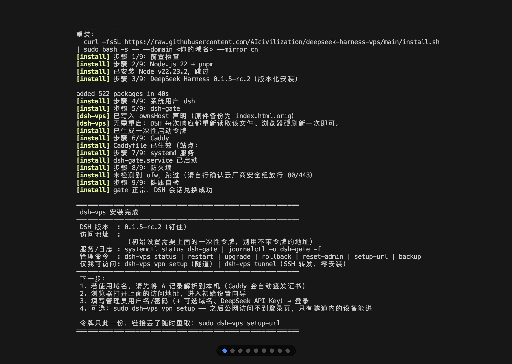
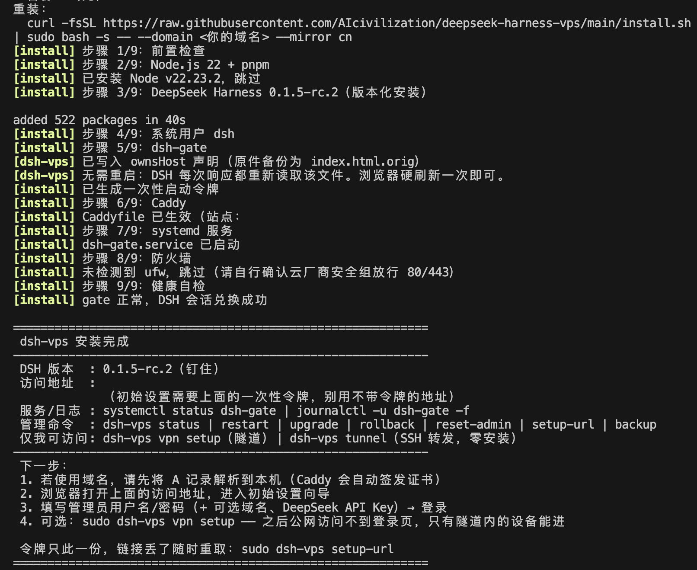
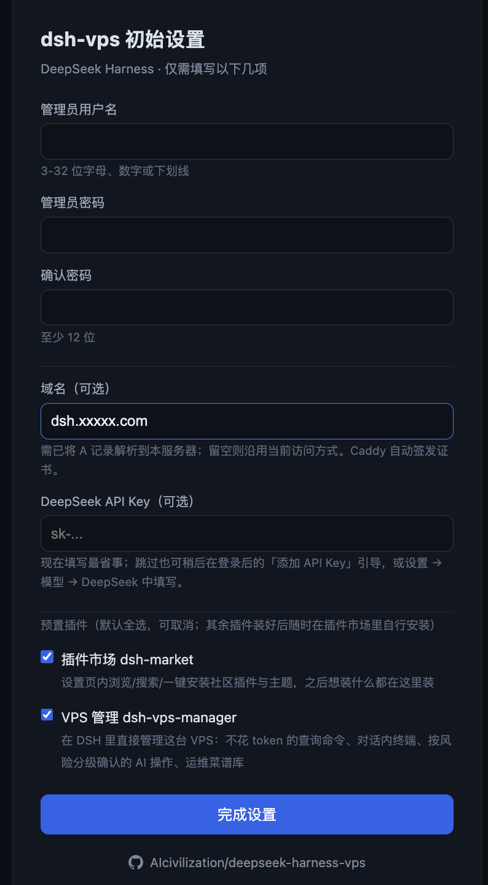
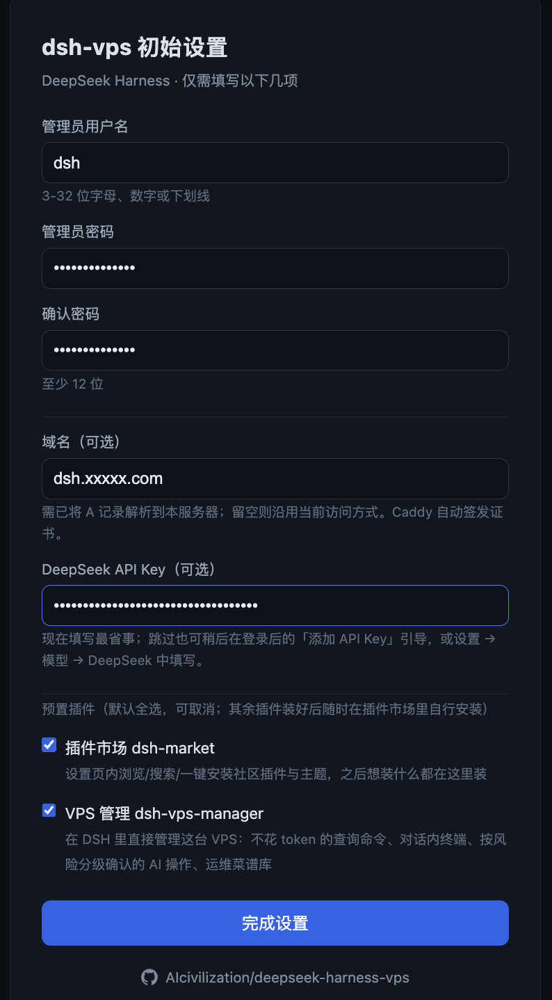
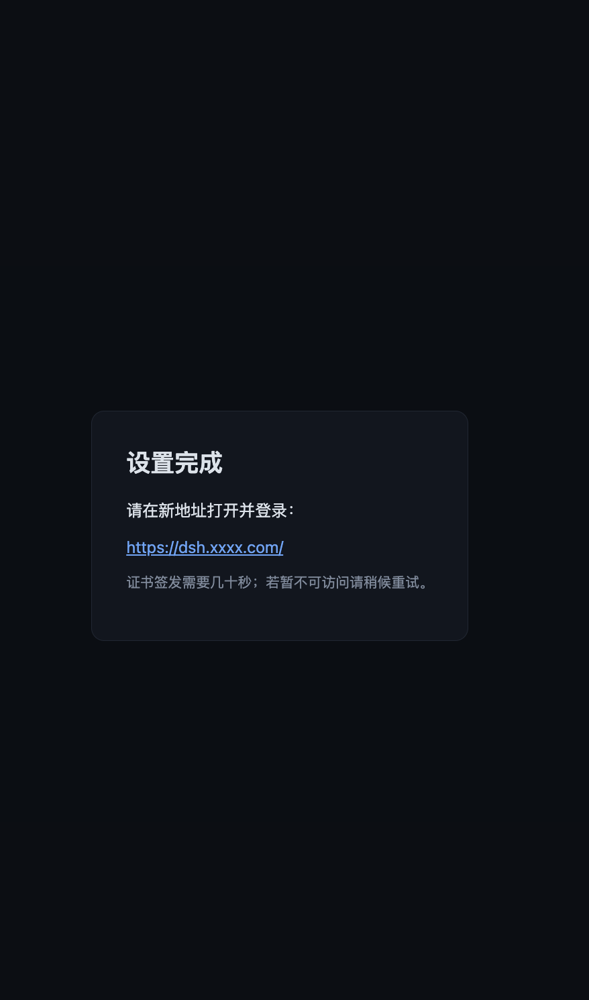
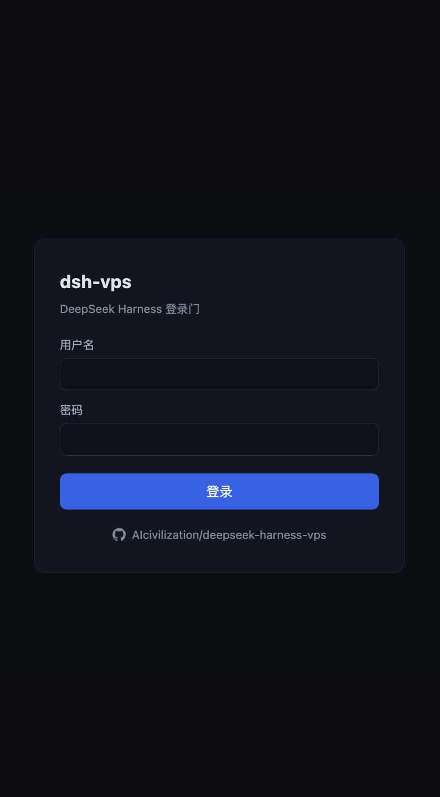
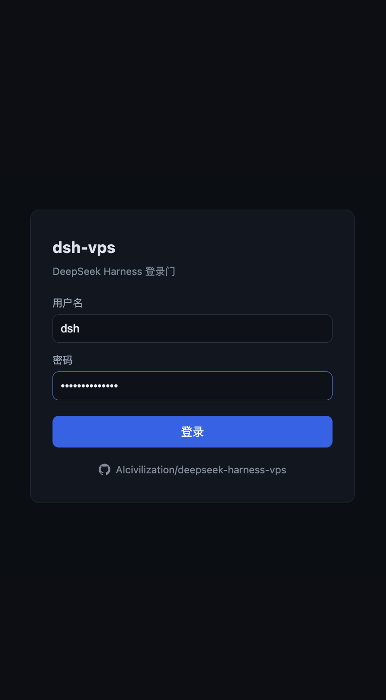
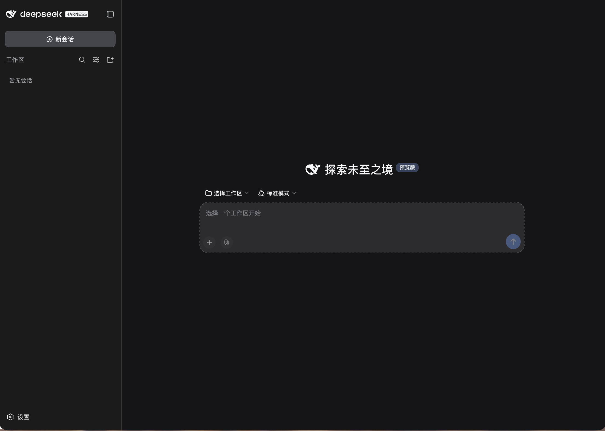
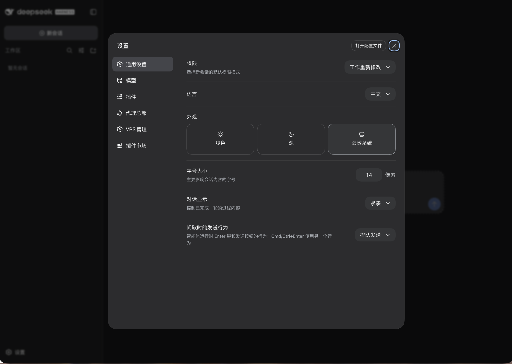
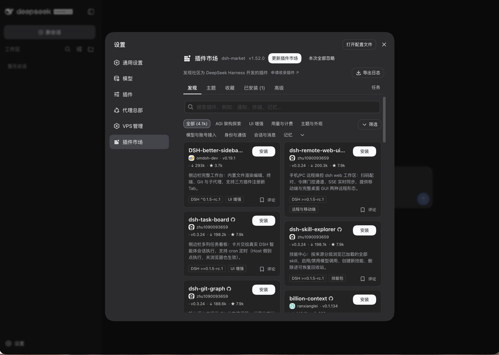

把 DeepSeek Harness 装进你的 VPS
一条命令，公网可达，界面原样。零运行时依赖的登录网关架在 DSH 前面，自动 HTTPS、开机自启、升级失败自动回滚 —— 设置、模型、API Key、插件市场，该有的都有。
$ curl -fsSL https://raw.githubusercontent.com/AIcivilization/deepseek-harness-vps/main/install.sh | sudo bash -s
有域名、或在国内网络，末尾追加参数：--domain dsh.example.com --mirror cn
DSH 只认本机浏览器，它把这道门搬到了公网
DSH 的特权接口（设置、API Key、插件管理）受浏览器信任围栏保护，直接反代到公网后这些页面全部失效。dsh-vps 让公网请求先过登录门，再由网关以服务端身份完成会话认证并透传。
一键安装
curl | bash，装完即 systemd 托管、开机自启。
登录门
scrypt 口令 + HMAC 会话 Cookie + 登录限流，公网请求先过这一关。
浏览器初始向导
管理员账号、域名、DeepSeek API Key、预置插件，全程在浏览器里填完。
一次性启动令牌
向导只对持有令牌的人开放，设置完成即作废；链接丢了 dsh-vps setup-url 重取。
自动 HTTPS
Caddy 自动签发并续期证书，向导里改域名即时热加载。
公网可用的原生设置页
设置、模型、API Key、权限策略在公网域名下照常读写。
插件市场可用
市场里浏览、安装插件，点「立即重启」直接生效。
安全升级
版本钉在已验证清单内，升级走备份 → 自检 → 失败自动回滚，也可随时手动回滚。
可观测与可恢复
/gate/health 直接给出崩溃原因与连续崩溃次数，dsh-vps backup 保留最近 3 份。
仅我可访问
一条命令建 WireGuard 隧道，之后公网连登录页都摸不到；也可用 SSH 本地转发。
从安装到插件市场，全程原生界面
点任意一张图可放大查看。










一条命令，剩下的交给向导
安装结束时终端会打印一条带一次性令牌的初始设置链接，浏览器打开它进入向导。直接打开 IP 或域名只会看到「需要启动令牌」页 —— 这是有意的。
curl -fsSL https://raw.githubusercontent.com/AIcivilization/deepseek-harness-vps/main/install.sh \
| sudo bash -s -- --domain dsh.example.com把 dsh.example.com 换成你的域名，并先把它的 A 记录解析到这台机器。
curl -fsSL https://raw.githubusercontent.com/AIcivilization/deepseek-harness-vps/main/install.sh \
| sudo bash -s -- --domain dsh.example.com --mirror cn加 --mirror cn 后，Node 与 DSH 走 npmmirror。
curl -fsSL https://raw.githubusercontent.com/AIcivilization/deepseek-harness-vps/main/install.sh | sudo bash -s证书由 Caddy 内置 CA 自签，浏览器会提示「不安全 / 证书不受信任」，属预期现象，选择继续访问即可。之后在向导里填上域名，Caddy 自动换成正式证书。
npx dsh-vps-install install --domain dsh.example.com装的是这个包自带的同一份脚本，版本固定、不联网拉取；需本机已有 Node 22+。
curl -fsSL https://raw.githubusercontent.com/AIcivilization/deepseek-harness-vps/v1.4.3/install.sh \
| sudo DSHVPS_RAW_BASE=https://raw.githubusercontent.com/AIcivilization/deepseek-harness-vps/v1.4.3 bash -s -- --domain dsh.example.com把地址里的 main 换成版本 tag，并让后续拉取的网关文件也用同一版本。
curl -fsSL https://raw.githubusercontent.com/AIcivilization/deepseek-harness-vps/main/uninstall.sh \
| sudo bash -s -- --yes删除服务、安装目录、Caddy 站点块与 DSH 数据目录，删除前打包备份（含 Caddyfile）到 /root/dsh-vps-uninstall-<时间戳>.tar.gz。--keep-data 保留 DSH 数据，--purge-caddy 连 Caddy 一起移除。
环境要求
- 系统Ubuntu 22.04+ / Debian 12+（root）
- 配置2 核 2G 以上
- 端口80 / 443 开放
- 域名可选；有则自动 HTTPS，无则先用公网 IP + 自签证书
三层都只绑回环，浏览器接触不到 DSH 的会话 Cookie
- 会话自愈：首启与插件安装期间页面显示「DeepSeek Harness 正在启动」，按 3 秒一次自检，会话就绪后自动刷新进入。
- 设置页可用性：网关随页面下发官方支持的
__DSH_TRANSPORT__.ownsHost声明，设置页、模型、API Key 与权限策略随之恢复；--trusted-host只负责打开网络围栏，两者是两道独立的门。 - 插件市场重启：网关剥掉 Caddy 加的
X-Forwarded-For（该头会触发 DSH 回环校验而 403），并重启自己托管的 DSH 子进程，保证会话兑换链路不中断。 - 排障入口：
sudo ss -ltnp | grep 3080查残留 DSH 进程；服务器上执行curl -s http://127.0.0.1:3100/gate/health可拿到lastError/lastExit/crashStreak。 - 收紧的暴露面：会话 Cookie 恒为 Secure/HttpOnly/SameSite；诊断接口只对服务器本机与已登录会话开放；服务以无特权的 dsh 用户运行并受 systemd 沙箱约束。
仓库内容
| 文件 | 作用 |
|---|---|
| install.sh | 一键安装入口（可选参数 --domain、--mirror cn） |
| uninstall.sh | 卸载并备份 |
| bin/dsh-vps | 运维命令行 |
| gate/server.js | 登录网关（Node 原生，零依赖） |
| gate/site-block.js | Caddy 站点块模板（安装 / 改域名 / 隧道开关共用） |
| caddy/Caddyfile.template | Caddy 主配置 |
| units/dsh-gate.service | systemd 单元模板 |
| versions.json | DSH 已验证版本清单 |
装完之后，都在 dsh-vps 里
sudo dsh-vps status # 服务状态 + 健康 + 版本提示
sudo dsh-vps restart # 重启（DSH 随之重启并自动重新兑换会话）
sudo dsh-vps upgrade # 升级 DSH 到已验证版本（备份 → 自检 → 失败自动回滚）
sudo dsh-vps update-gate # 拉取并重启网关自身代码
sudo dsh-vps rollback # 切回上一 DSH 版本
sudo dsh-vps setup-url # 重新打印带一次性令牌的初始设置链接
sudo dsh-vps backup # 备份数据（保留最近 3 份）
sudo dsh-vps vpn setup macbook # 建 WireGuard 隧道并切到「仅隧道可访问」
sudo dsh-vps vpn add iphone # 再签发一台设备（打印配置 + 二维码）
sudo dsh-vps tunnel # 零安装备选：SSH 本地端口转发用法
DSH 本身跟随官方版本升级：网关每 6 小时检查一次 npm 上的官方最新版，有新版本时页面右下角弹出提示，点「立即升级」并确认即可，全程约 1–3 分钟。
几个常见疑问
它会改动 DSH 本身吗？
不会。装的是 npm 上的官方原版 DSH，前端零改动；公网下缺失的能力由网关随页面下发官方支持的 ownsHost 声明补齐，不动源码。
需要 Docker 吗？
不需要。Caddy + 一个零运行时依赖的 Node 网关 + 官方 DSH，全部由 systemd 托管，开机自启。
没有域名能用吗？
能。去掉 --domain 直接按公网 IP 安装，证书由 Caddy 内置 CA 自签，浏览器会提示不受信任，选择继续访问即可；之后在向导里补上域名，Caddy 自动换成正式证书。
升级失败会把我机器搞挂吗？
升级走备份 → 安装 → 自检，自检不通过自动回滚到原版本，也可以随时 sudo dsh-vps rollback 手动切回。DSH 版本钉在 versions.json 里已验证的清单内。
不想让公网看到登录页怎么办？
sudo dsh-vps vpn setup macbook 建一条 WireGuard 隧道，之后 Caddy 只放行隧道网段，扫描器连握手都拿不到；域名与证书照旧，续期不受影响。只在电脑上用的话，sudo dsh-vps tunnel 走 SSH 本地转发，什么都不用装。
预置插件装了什么？
两款：dsh-market（设置页内浏览、搜索、一键安装社区插件与主题）和 dsh-vps-manager（在 DSH 里直接管理这台 VPS）。默认全选、可取消，后台安装后 DSH 自动重启生效。